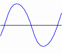
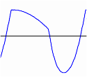
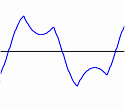
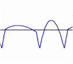

WaveFold Effect
|
offset 0% |
offset 80% |
threshold
0% |
 |
 |
threshold
30% |
 |
 |
Wavefolding is a type of distortion synthesis where when the input amplitude exceeds the threshold, the peaks get inverted.
These folds produce complex spectra from simple waveforms so when you run a single sine wave through a wavefolder, very strange harmonics will emerge.
Traditional analog wavefolding will invert peaks into a series of folds around the threshold level but this implementation will do exact folding of all values above the peak level and is intended to create complex waveforms from the default 6 available waveforms in AeonWave.
The WaveFold effect is supported by Emitters.
WaveFold Effect parameters
The effect uses only one effect slot.
- AAX_WAVEFOLD_EFFECT
MONO
-
p0
AAX_WAVEFOLD_OFFSET- Maximum DC-offset shift value.
Between -1.0 and 1.0. Defaults to 0.0 (no offset)
p1
AAX_LFO_FREQUENCY- Frequency of the low-frequency oscillator.
Between 0.01 and 10 Hz.
p2
AAX_LFO_MAX- Maximum threshold of the low-frequency oscillator.
Between 0.0 and 1.0, set to 0.0 for a constant offset.
p3
AAX_LFO_MIN- Minimum position of the low-frequency oscillator.
Between 0.0 and 1.0
Both offset and threshold are LFO operated and both operations share the
minimum LFO value.
WaveFold Effect state options
- AAX_WAVEFOLD_EFFECT
-
Valid types are:
- AAX_CONSTANT_VALUE (or true)
- AAX_TRIANGLE
- AAX_SINE
- AAX_SQUARE
- AAX_IMPULSE
- AAX_SAWTOOTH
- AAX_CYCLOID
- AAX_RANDOMNESS
- AAX_RANDOM_SELECT
- AAX_TIMED_TRANSITION
- AAX_ENVELOPE_FOLLOW
All waveforms may be combined with AAX_INVERSE to invert the behaviour.
All waveforms may be combined with AAX_LOGARITHMIC to create exponential behaviour
e.g. AAX_TIMED_TRANSITION|AAX_INVERSE|AAX_LOGARITHMIC